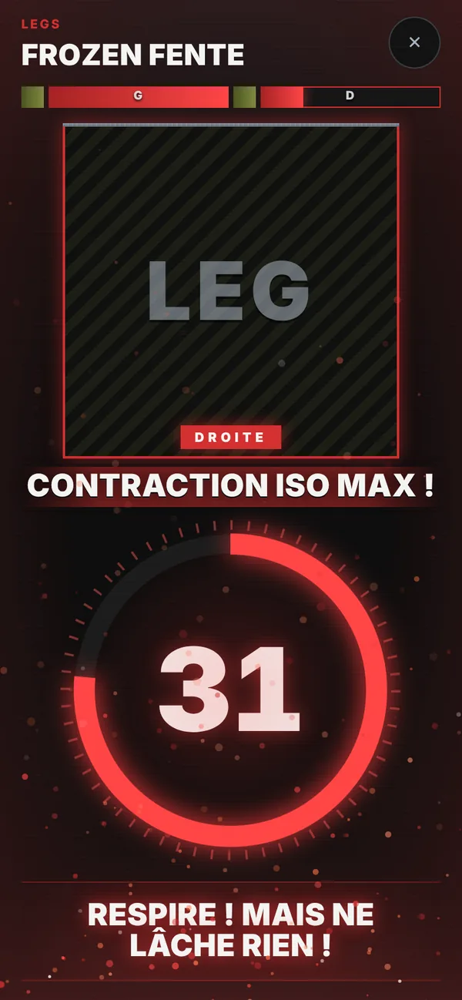
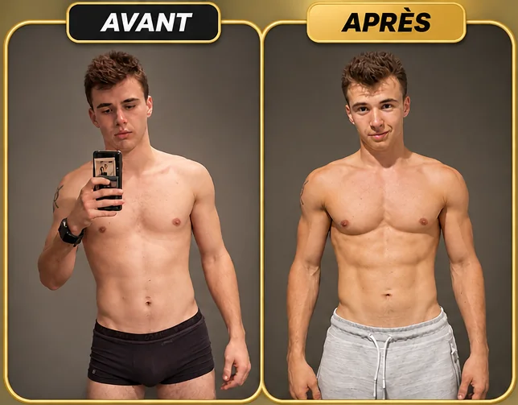
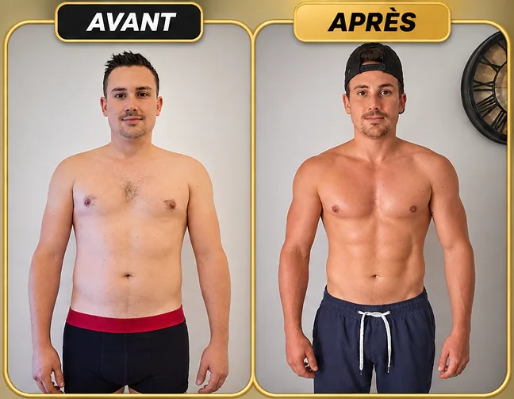
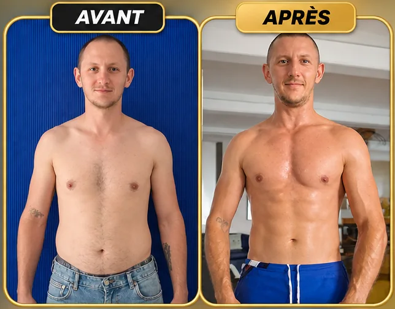
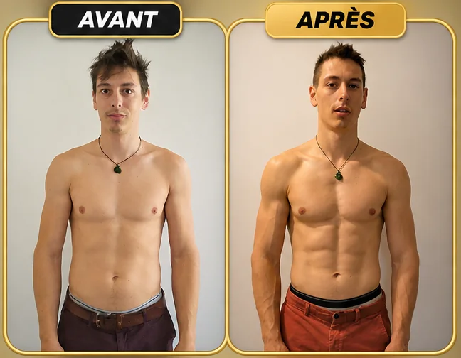
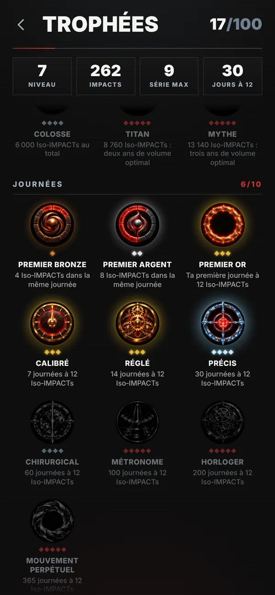
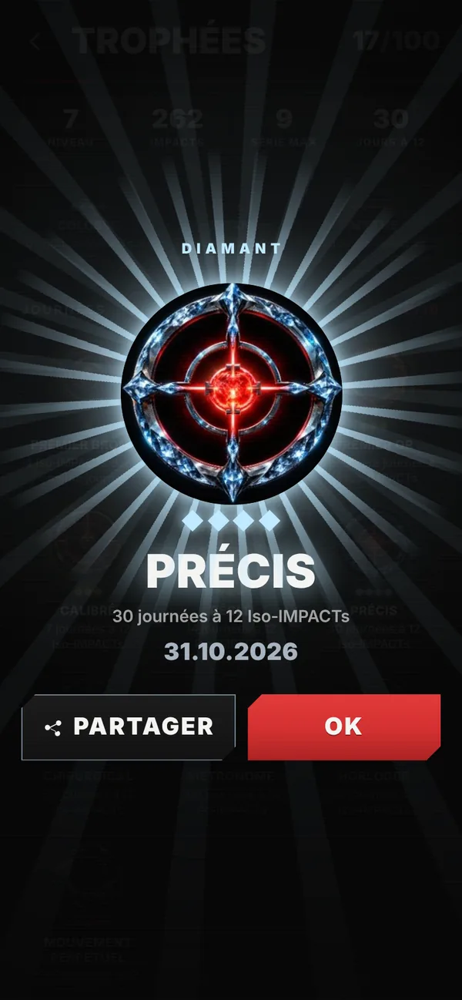
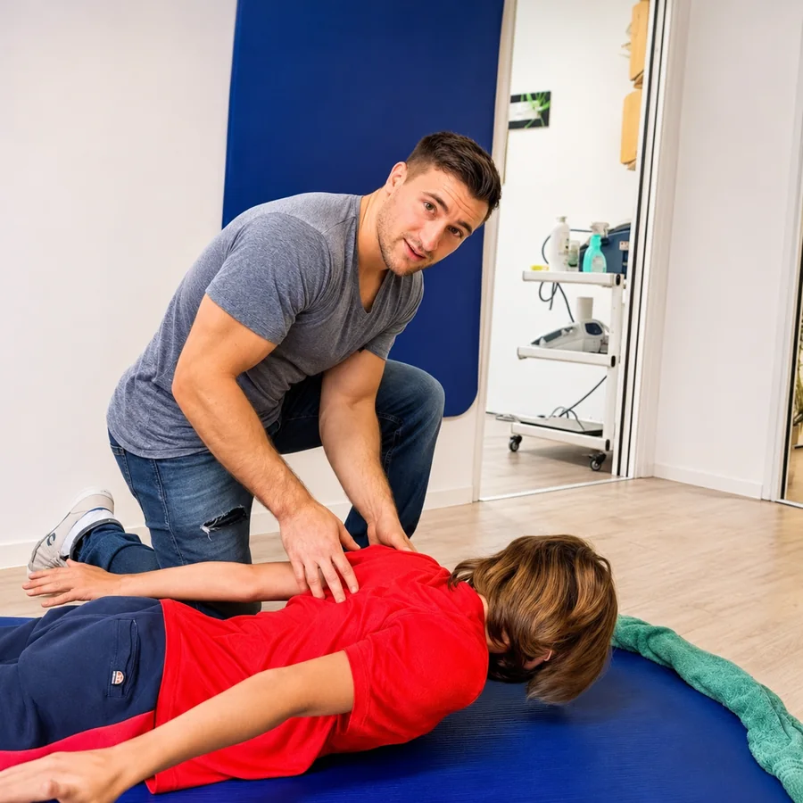
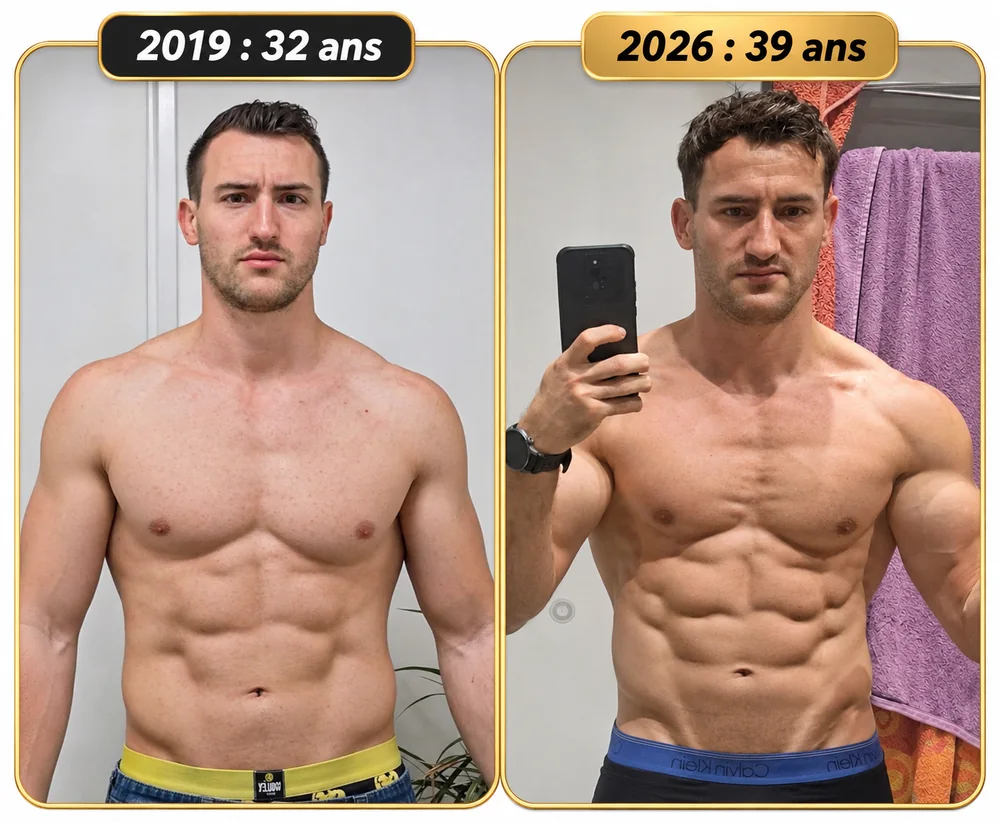
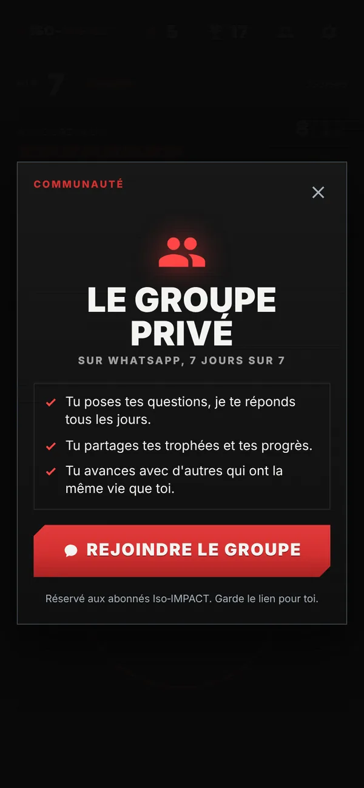

Prends du muscle dans les temps morts de ta journée.
Le temps que ton café coule ou que tes pâtes cuisent, tu as largement de quoi faire travailler un muscle à fond. Iso-IMPACT te guide pour transformer ces petits moments perdus en contractions isométriques maximales, sans matériel, en tenue de ville, où que tu sois.
Dès 10,33 € par mois.
Satisfait ou remboursé pendant 30 jours.
Des temps morts, ta journée en est pleine. En voici quelques-uns.
- Le café coule
- Les enfants cherchent leurs chaussures
- La visio qui ne démarre pas
- Le micro-ondes tourne
- Ton appel est en attente
- Le fichier met trois plombes à charger
- Les pâtes cuisent
- Le bain des enfants se remplit
- La pub avant ta série
Inutile de bloquer une heure dans ton agenda : il suffit de récupérer les minutes que tu perds déjà.
Entre le boulot et les enfants, la salle est passée à la trappe.
Je connais bien ce scénario. Tu te motives, tu trouves un programme à quatre séances par semaine, et pendant trois ou quatre semaines tout roule. Puis arrivent un dossier urgent, un enfant malade ou un simple rhume, et le programme s'arrête là, sans que tu aies vraiment décidé d'arrêter.
Le problème ne vient pas de toi. Une séance d'une heure, avec le trajet et le vestiaire, ce sont presque deux heures à caser, et pour beaucoup d'hommes actifs ce n'est tout simplement plus possible. Le manque de temps est d'ailleurs le premier frein au sport cité par les adultes. Ishii 2009
Le souci, c'est que ton corps continue d'avancer pendant ce temps. La part de muscle dans ton poids commence à baisser dès la vingtaine, et la perte devient vraiment visible vers la fin de la quarantaine, surtout aux jambes. Janssen 2000
Plutôt que de courir après du temps que tu n'as pas, autant changer de méthode.
Ton muscle ne sait pas si tu pousses une barre de 100 kg ou un cadre de porte.
Ce qu'il ressent, c'est l'intensité de ton effort. C'est tout le principe de l'isométrie maximale : tu pousses, tu tires ou tu serres de toutes tes forces contre quelque chose qui ne bouge pas, comme un mur, une table ou ton propre corps. Il n'y a aucun mouvement, mais la tension dans le muscle est énorme et tu la tiens sans relâcher.
Une tension maximale
La tension mécanique est le premier signal qui pousse un muscle à grossir. Wackerhage 2019 Quand tu forces vraiment à fond, ton corps est obligé de recruter toutes tes fibres, y compris les plus puissantes, et pour ça tu n'as besoin d'aucune charge.
Un garrot naturel
Dès que tu dépasses 40 % de ta force, le muscle écrase ses propres vaisseaux et le sang n'y circule presque plus. Zwarts 1988 En tenant la contraction, tu crées un vrai stress métabolique, et plus ce manque d'oxygène est marqué, plus le muscle grossit. Goto 2019
La bonne durée
Dans une étude de 14 semaines, des contractions tenues 30 secondes ont fait progresser la force de 55 %, presque deux fois plus que des contractions courtes, et ce sont les seules à avoir fait grossir le muscle. Schott 1995 Un Iso-IMPACT dure 40 secondes.

L'appli te fait travailler sous tous les angles, et chacun apporte quelque chose.
En 12 semaines, des ischio-jambiers entraînés en position étirée ont gagné 14,1 % de muscle, contre 9,3 % en position courte. Maeo 2021
C'est à cet angle que tu développes ta force maximale. Chez des hommes déjà entraînés, garder la tension en milieu d'amplitude a fait grossir le triceps de 48,7 % en 8 semaines, contre 28,2 % en amplitude complète. Goto 2019
Muscle raccourci à fond, son épaisseur a augmenté de 5 à 9 % en 8 semaines Alegre 2014 et la force a progressé de 13,4 % sur la fin du mouvement, là où tu verrouilles. Noorkõiv 2014 Comme le muscle y tient plus longtemps, c'est aussi la position idéale pour enchaîner les impacts dans la journée. Kooistra 2005
Concrètement, comment ça se passe ?
-
Tu lances l'impact
Dès que tu as un moment, tu appuies sur le bouton. L'appli choisit l'exercice parmi 45 et fait tourner les 7 zones (pecs, dos, épaules, biceps, triceps, abdos, jambes), donc tu n'as jamais à te demander quoi faire.
-
Tu te mets en place
Tu as 5 secondes pour te positionner, avec la démo sous les yeux. Un bip marque chaque seconde, puis le signal de départ tombe.
-
Tu pousses à fond
L'appli compte, vibre et t'encourage pendant tout l'effort, sans que tu aies besoin de regarder l'écran. Au gong, c'est terminé et tu reprends ta journée comme si de rien n'était.
À partir de 10 séries par muscle et par semaine, la prise de muscle moyenne grimpe à 9,8 %, contre 5,4 % en dessous de 5 séries. Schoenfeld 2017 Et que tes séries soient regroupées ou étalées dans la journée, le résultat est le même à volume égal. Schoenfeld 2019 Ce qui compte, c'est ce que tu accumules sur la semaine, bien plus que la durée de chaque séance.
Voilà ce que donnent trois mois de méthode, appliquée chaque jour.
Ces hommes ont suivi la méthode avec moi pendant trois mois, tous les jours, avec sérieux et constance. Des contractions maximales glissées dans leurs journées, et voici le résultat.




Photos publiées avec l'accord des personnes. Résultats obtenus en 3 mois de pratique quotidienne ; ils varient d'une personne à l'autre.
Tout est fait pour que tu n'aies plus à réfléchir.
Un seul bouton
L'appli décide à ta place et répartit le travail entre toutes les zones de ton corps.
Un coach dans ta poche
Bips, vibrations et encouragements toutes les 6 secondes : le son te guide du début à la fin.
Gauche, puis droite
Quand un exercice se fait d'un côté, l'appli enchaîne d'elle-même sur l'autre pour éviter tout déséquilibre.
Une alternative en une touche
Si l'endroit ne s'y prête pas ou qu'un exercice te gêne, tu en changes en gardant la même zone.
Ça marche partout
L'appli fonctionne sans réseau et garde l'écran allumé, que tu sois au bureau, au sous-sol ou dans le train.
Tu sais quand t'arrêter
La jauge du jour t'indique ta zone optimale, pour que chaque effort compte.
Tu vas vite vouloir ta médaille d'or du jour.
Chaque jour a ses trois paliers, ce qui te garantit une petite victoire même quand ta journée est chargée. Au-dessus, il y a des niveaux, des séries et 100 trophées répartis en 5 raretés, du bronze au légendaire. Certains tombent en une semaine, d'autres te demanderont plusieurs années.
Ce côté jeu a un vrai effet sur ta régularité. Une méta-analyse de 16 essais randomisés, menée sur 2 407 personnes, montre que les points, les niveaux et les récompenses font bouger davantage, avec en moyenne 1 610 pas de plus par jour. Mazeas 2022
Et si tu rates une journée, l'appli ne te pénalise pas. Il faut en moyenne 66 jours pour qu'une habitude devienne automatique, et un oubli de temps en temps ne l'empêche pas de s'installer. Lally 2010
Quelques-uns des 100 trophées à débloquer.


En prime, tes tendons deviennent plus solides et tes douleurs se calment.
Si tu traînes un genou qui tire, une épaule qui grince ou un tendon d'Achille capricieux, sache que l'isométrie fait partie des outils préférés des kinés. Elle permet de charger un tendon sans passer par l'amplitude qui fait mal.
C'est le gain de raideur du tendon d'Achille en 14 semaines, avec des contractions à 90 % de la force maximale. À 55 %, le tendon n'avait pas bougé, d'où l'intérêt de pousser à fond. Arampatzis 2007
Chez des volleyeurs souffrant du tendon rotulien, la douleur au squat est passée de 7 à 0,2 sur 10 juste après des contractions isométriques, et l'effet tenait encore 45 minutes plus tard. Rio 2015
C'est la baisse moyenne de la tension au repos, en mmHg. Sur 270 essais, l'isométrie est l'entraînement qui la fait le plus baisser, devant l'endurance et la musculation classique. Edwards 2023
Tu choisis l'angle qui ne fait pas mal, et tu peux forcer quand même.

Qui suis-je pour te proposer ça ?
Je m'appelle Jérôme, j'ai 39 ans. Je suis kinésithérapeute depuis 2014, préparateur physique et judoka de compétition. Mais je suis surtout un père de famille avec des journées bien trop courtes.
Entre mes patients, mes enfants, mes responsabilités et mes entraînements, je connais parfaitement cette sensation : vouloir prendre soin de son corps sans avoir le temps de le faire.
Et malgré mon expérience sportive, je n'ai pas été épargné par les blessures : tendinopathies, douleurs d'épaule, problèmes de dos…
J'ai alors commencé à remettre en question une idée que tout le monde semblait accepter : pourquoi faudrait-il passer des heures en salle, multiplier les mouvements et s'équiper de matériel pour développer ses muscles ?
En croisant mes connaissances de kiné et mon expérience de sportif, je me suis intéressé à une approche aussi simple que radicale : l'isométrie. Contracter intensément ses muscles, sans soulever de poids, sans même faire de mouvement.
Je l'ai d'abord testée sur moi, dans les petits trous de mes journées. Puis je l'ai appliquée avec les hommes que je coache, chaque jour, pendant trois mois.
Iso-IMPACT, c'est cette méthode, mise dans ton téléphone.

Et tu n'avances jamais seul.
Ton abonnement t'ouvre les portes du groupe privé Iso-IMPACT, sur WhatsApp. J'y passe tous les jours, 7 jours sur 7. Un doute sur une position, une gêne au genou, une question sur ta récupération : tu la poses, et je te réponds.
Tu y retrouves aussi d'autres hommes qui ont la même vie que toi. On y partage ses trophées et ses progrès, on se relance les jours où la motivation baisse, et ça change tout sur la durée.
Une appli dans ta poche, un kiné qui te suit, et une équipe autour de toi.

C'est fait pour toi ?
Oui, si…
- Tu veux prendre du muscle, mais la salle ne rentre plus dans ton emploi du temps.
- Tu as passé la trentaine et tu sens que ton corps commence à perdre du terrain.
- Tu veux un entraînement simple, où tu n'as qu'à appuyer et pousser.
- Une tendinite ou une articulation douloureuse te gêne en musculation classique.
- Tu t'entraînes déjà et tu veux ajouter du volume sans ajouter de séances.
Non, si…
- Tu cherches quelque chose de tranquille, parce qu'ici on pousse à 100 %.
- Tu espères des résultats sans fournir d'effort.
- Tu as deux heures par jour à passer en salle. Iso-IMPACT a été pensé pour ceux qui ne les ont pas.
Ton accès Iso-IMPACT
Pour moins cher qu'un café par jour, sans salle, sans trajet et sans matériel à acheter.
Ce que tu reçois
- L'appli Iso-IMPACT sur ton téléphone, iPhone ou Android
- Le groupe privé WhatsApp : suivi 7 jours sur 7 avec moi et entraide entre membres
- 45 exercices sur 7 zones, en rotation automatique
- La démo vidéo de chaque exercice
- Le coach dans ta poche : sons, vibrations, encouragements
- Niveaux, séries et 100 trophées à collectionner et partager
- Une appli qui fonctionne sans réseau
- Les nouveaux exercices et fonctions, ajoutés au fil des mois
Annuel
Soit 10,33 € par mois, ou 34 centimes par jour. Au lieu de , tu économises 55,88 €.
Je prends l'annuelSatisfait ou remboursé pendant 30 jours
Teste Iso-IMPACT pendant un mois. Si tu n'es pas convaincu, envoie-moi simplement un email à contact@physiquerush.com dans les 30 jours qui suivent ton premier paiement, et je te rembourse intégralement, sans te demander de justification. Tout le risque est pour moi.
Les questions qu'on me pose souvent
Sans charges, est-ce que ça fait vraiment du muscle ?
Oui, parce que ton muscle réagit à la tension qu'il subit, et non à l'objet contre lequel tu pousses. Une contraction maximale tenue sans relâcher combine la tension mécanique et le stress métabolique, les deux moteurs de la prise de muscle. Les études citées sur cette page l'ont mesuré sur des périodes de 6 à 14 semaines, et les photos de mes coachés montrent ce que ça donne en 3 mois.
Honnêtement, je n'ai pas le temps.
C'est justement pour toi que l'appli existe. Tu n'as aucun créneau à bloquer, tu utilises les temps morts que tu as déjà : le café, le micro-ondes, un appel en attente.
J'ai peur d'abandonner, comme d'habitude.
Tu décroches une médaille dès 4 impacts, tu as une série à faire grimper et des trophées à débloquer, sans aucun malus si tu rates un jour. L'effet du jeu sur la régularité a été démontré par 16 essais randomisés, et le groupe privé est là pour te relancer les jours sans.
J'ai mal au genou ou à l'épaule. Je peux quand même le faire ?
Oui, et c'est même l'un des gros avantages de l'isométrie : tu choisis l'angle qui ne fait pas mal et tu peux forcer quand même. Si un exercice te gêne, une touche te propose une alternative pour la même zone. En cas de doute sur ta situation, demande l'avis de ton médecin.
Je fais déjà de la muscu. Qu'est-ce que ça m'apporte ?
Du volume en plus sans séance en plus, des tendons plus solides, et du travail à des angles que tu touches rarement en salle. Pour le muscle, c'est le total de ta semaine qui compte.
Je ne saurai pas quoi faire.
L'appli choisit pour toi, te montre la démo et te guide au son. Tu n'as qu'à appuyer sur le bouton.
Et si j'ai une question en cours de route ?
Tu la poses dans le groupe privé WhatsApp. J'y réponds tous les jours, 7 jours sur 7, et les autres membres sont là aussi pour partager leur expérience.
Comment je reçois l'appli ? Elle marche sur iPhone ?
Après ton paiement, tu reçois ton accès par email sous 24 h. Il suffit d'ouvrir le lien sur ton téléphone et d'ajouter l'appli à ton écran d'accueil. Elle fonctionne sur iPhone comme sur Android, sans passer par un store.
Et si ça ne me plaît pas ?
Tu as 30 jours pour te faire ton avis. Si tu n'es pas convaincu, un email à contact@physiquerush.com suffit et je te rembourse intégralement.
Je peux arrêter quand je veux ?
Oui, il n'y a aucun engagement. Tu résilies en un clic depuis ton espace abonné, sans email à envoyer ni justification à donner.
Est-ce qu'on transpire ?
Très peu. Tu fais ton impact en tenue de ville et tu retournes à ta réunion sans passer par la douche.
Demain, tu auras encore des temps morts. Fais-en du muscle.
Je commence maintenantDès 10,33 € par mois, satisfait ou remboursé pendant 30 jours.
P.S.Si tu as lu jusqu'ici, c'est que l'idée te parle. Tu ne prends aucun risque : tu as 30 jours pour être remboursé et tu peux résilier en un clic. Dans le meilleur des cas, tu prends du muscle sans rien changer à ta vie. Le vrai risque, c'est de laisser filer encore une année.